The DistMatrix class¶
The DistMatrix class is meant to provide a distributed-memory analogue of the Matrix class. Similar to PLAPACK, roughly ten different matrix distributions are provided and it is trivial (in the programmability sense) to redistribute from one to another: in PLAPACK, one would simply call PLA_Copy, whereas, in Elemental, it is handled through overloading the 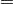 operator.
Since it is crucial to know not only how many processes to distribute the data over, but which processes, and in what manner they should be decomposed into a logical two-dimensional grid, an instance of the Grid class must be passed into the constructor of the DistMatrix class.
Note
Since the DistMatrix class makes use of MPI for message passing, custom interfaces must be written for nonstandard datatypes. As of now, the following datatypes are fully supported for DistMatrix: int, float, double, Complex<float>, and Complex<double>.
AbstractDistMatrix¶
This abstract class defines the list of member functions that are guaranteed to be available for all matrix distributions.
- class AbstractDistMatrix<T>¶
Basic information
- int Height() const¶
Return the height of the matrix.
- int Width() const¶
Return the width of the matrix.
- int LocalHeight() const¶
Return the local height of the matrix.
- int LocalWidth() const¶
Return the local width of the matrix.
- int LocalLDim() const¶
Return the local leading dimension of the matrix.
- size_t AllocatedMemory() const¶
Return the number of entries of type T that we have locally allocated space for.
- const elem::Grid& Grid() const¶
Return the grid that this distributed matrix is distributed over.
- T* LocalBuffer(int iLocal=0, int jLocal=0 )¶
Return a pointer to the portion of the local buffer that stores entry (iLocal,jLocal).
- const T* LockedLocalBuffer(int iLocal=0, int jLocal=0 ) const¶
Return a pointer to the portion of the local buffer that stores entry (iLocal,jLocal), but do not allow for the data to be modified through the returned pointer.
- Matrix<T>& LocalMatrix()¶
Return a reference to the local matrix.
- const Matrix<T>& LockedLocalMatrix() const¶
Return an unmodifiable reference to the local matrix.
I/O
- void Print(const std::string msg="") const¶
Print the distributed matrix to standard output (std::cout).
- void Print(std::ostream& os, const std::string msg="") const¶
Print the distributed matrix to the output stream os.
- void Write(const std::string filename, const std::string msg="") const¶
Print the distributed matrix to the file named filename.
Distribution details
- void FreeAlignments()¶
Free all alignment constaints.
- bool ConstrainedColAlignment() const¶
Return whether or not the column alignment is constrained.
- bool ConstrainedRowAlignment() const¶
Return whether or not the row alignment is constrained.
- int ColAlignment() const¶
Return the alignment of the columns of the matrix.
- int RowAlignment() const¶
Return the alignment of the rows of the matrix.
- int ColShift() const¶
Return the first global row that our process owns.
- int RowShift() const¶
Return the first global column that our process owns.
- int ColStride() const¶
Return the number of rows between locally owned entries.
- int RowStride() const¶
Return the number of columns between locally owned entries.
Entry manipulation
- T Get(int i, int j) const¶
Return the (i,j) entry of the global matrix. This operation is collective.
- void Set(int i, int j, T alpha)¶
Set the (i,j) entry of the global matrix to
 . This
operation is collective.
. This
operation is collective.
- void Update(int i, int j, T alpha)¶
Add
to the (i,j) entry of the global matrix. This
operation is collective.
- T GetLocal(int iLocal, int jLocal) const¶
Return the (iLocal,jLocal) entry of our local matrix.
- void SetLocal(int iLocal, int jLocal, T alpha)¶
Set the (iLocal,jLocal) entry of our local matrix to
.
- void UpdateLocal(int iLoca, int jLocal, T alpha)¶
Add
to the (iLocal,jLocal) entry of our local matrix.
Note
Many of the following routines are only valid for complex datatypes.
- typename Base<T>::type GetRealPart(int i, int j) const¶
Return the real part of the (i,j) entry of the global matrix. This operation is collective.
- typename Base<T>::type GetImagPart(int i, int j) const¶
Return the imaginary part of the (i,j) entry of the global matrix. This operation is collective.
- void SetRealPart(int i, int j, typename Base<T>::type alpha)¶
Set the real part of the (i,j) entry of the global matrix to
.
- void SetImagPart(int i, int j, typename Base<T>::type alpha)¶
Set the imaginary part of the (i,j) entry of the global matrix to
.
- void UpdateRealPart(int i, int j, typename Base<T>::type alpha)¶
Add
to the real part of the (i,j) entry of the global
matrix.
- void UpdateImagPart(int i, int j, typename Base<T>::type alpha)¶
Add
to the imaginary part of the (i,j) entry of the
global matrix.
- typename Base<T>::type GetRealPartLocal(int iLocal, int jLocal) const¶
Return the real part of the (iLocal,jLocal) entry of our local matrix.
- typename Base<T>::type GetLocalImagPart(int iLocal, int jLocal) const¶
Return the imaginary part of the (iLocal,jLocal) entry of our local matrix.
- void SetLocalRealPart(int iLocal, int jLocal, typename Base<T>::type alpha)¶
Set the real part of the (iLocal,jLocal) entry of our local matrix.
- void SetLocalImagPart(int iLocal, int jLocal, typename Base<T>::type alpha)¶
Set the imaginary part of the (iLocal,jLocal) entry of our local matrix.
- void UpdateRealPartLocal(int iLocal, int jLocal, typename Base<T>::type alpha)¶
Add
to the real part of the (iLocal,jLocal) entry of
our local matrix.
- void UpdateLocalImagPart(int iLocal, int jLocal, typename Base<T>::type alpha)¶
Add
to the imaginary part of the (iLocal,jLocal) entry
of our local matrix.
Viewing
- bool Viewing() const¶
Return whether or not this DistMatrix is viewing another.
- bool LockedView() const¶
Return whether or not this DistMatrix is viewing another in a manner that does not allow for modifying the viewed data.
Utilities
- void Empty()¶
Resize the distributed matrix so that it is
 and free
all allocated storage.
and free
all allocated storage.
- void ResizeTo(int height, int width)¶
Reconfigure the matrix so that it is height
 width.
width.
- void SetGrid(const elem::Grid& grid)¶
Clear the distributed matrix’s contents and reconfigure for the new process grid.
[MC,MR]¶
This is by far the most important matrix distribution in Elemental, as the vast majority of parallel routines expect the input to be in this form. For a 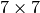 matrix distributed over a 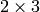 process grid, individual entries would be owned by the following processes (assuming the column and row alignments are both 0):
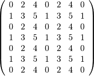
Similarly, if the column alignment is kept at 0 and the row alignment is changed to 2 (meaning that the third process column owns the first column of the matrix), the individual entries would be owned as follows:
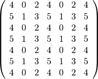
It should also be noted that this is the default distribution format for the DistMatrix class, as DistMatrix<T> defaults to DistMatrix<T,MC,MR>.
- class DistMatrix<T, MC, MR>¶
Constructors
- DistMatrix( const elem::Grid& grid=DefaultGrid() )
Create a
distributed matrix over the specified grid.
- DistMatrix( int height, int width, const elem::Grid& grid=DefaultGrid() )
Create a height
width distributed matrix over the
specified grid.
- DistMatrix(int height, int width, bool constrainedColAlignment, bool constrainedRowAlignment, int colAlignment, int rowAlignment, const elem::Grid& grid)¶
Create a height
width distributed matrix
distributed over the specified process grid, but with the top-left entry
owned by the colAlignment process row and the rowAlignment
process column. Each of these alignments may be constrained to remain
constant when redistributing data into this DistMatrix.
- DistMatrix(int height, int width, bool constrainedColAlignment, bool constrainedRowAlignment, int colAlignment, int rowAlignment, int ldim, const elem::Grid& grid)¶
Same as above, but the local leading dimension is also specified.
- DistMatrix(int height, int width, int colAlignment, int rowAlignment, const T* buffer, int ldim, const elem::Grid& grid)¶
View a constant distributed matrix’s buffer; the buffer must correspond to the local portion of an elemental distributed matrix with the specified row and column alignments and leading dimension, ldim.
- DistMatrix(int height, int width, int colAlignment, int rowAlignment, T* buffer, int ldim, const elem::Grid& grid)¶
Same as above, but the contents of the matrix are modifiable.
- DistMatrix(const DistMatrix<T, U, V>& A)¶
Build a copy of the distributed matrix A, but force it to be in the [MC,MR] distribution.
Redistribution
- const DistMatrix<T, MC, MR>& operator=(const DistMatrix<T, MC, MR>& A)¶
If this matrix can be properly aligned with A, then perform a local copy, otherwise perform an mpi::SendRecv permutation first.
- const DistMatrix<T, MC, MR>& operator=(const DistMatrix<T, MC, STAR>& A)¶
Perform a local (filtered) copy to form an [MC,MR ] distribution and then, if necessary, fix the alignment of the MC distribution via an mpi::SendRecv within process columns.
- const DistMatrix<T, MC, MR>& operator=(const DistMatrix<T, STAR, MR>& A)¶
Perform a local (filtered) copy to form an [MC,MR ] distribution and then, if necessary, fix the alignment of the MR distribution via an mpi::SendRecv within process rows.
- const DistMatrix<T, MC, MR>& operator=(const DistMatrix<T, MD, STAR>& A)¶
Since the [MD,STAR] distribution is defined such that its columns are distributed like a diagonal of an [MC,MR] distributed matrix, this operation is not very common.
Note
This redistribution routine is not yet implemented.
- const DistMatrix<T, MC, MR>& operator=(const DistMatrix<T, STAR, MD>& A)¶
Note
This redistribution routine is not yet implemented.
- const DistMatrix<T, MC, MR>& operator=(const DistMatrix<T, MR, MC>& A)¶
This routine serves to transpose the distribution of A[MR,MC] into the standard matrix distribution, A[MC,MR]. This redistribution is implemented with four different approaches: one for matrices that are taller than they are wide, one for matrices that are wider than they are tall, one for column vectors, and one for row vectors.
- const DistMatrix<T, MC, MR>& operator=(const DistMatrix<T, MR, STAR>& A)¶
This is similar to the above routine, but with each row of A being undistributed, and only one approach is needed: 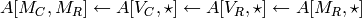.
- const DistMatrix<T, MC, MR>& operator=(const DistMatrix<T, STAR, MC>& A)¶
This routine is dual to the 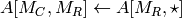 redistribution and is accomplished through the sequence: 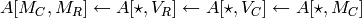.
- const DistMatrix<T, MC, MR>& operator=(const DistMatrix<T, VC, STAR>& A)¶
Perform an mpi::AllToAll within process rows in order to redistribute to the [MC,MR] distribution (an mpi::SendRecv within process columns may be required for alignment).
- const DistMatrix<T, MC, MR>& operator=(const DistMatrix<T, STAR, VC>& A)¶
Accomplished through the sequence 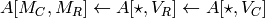.
- const DistMatrix<T, MC, MR>& operator=(const DistMatrix<T, VR, STAR>& A)¶
Accomplished through the sequence 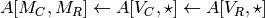.
- const DistMatrix<T, MC, MR>& operator=(const DistMatrix<T, STAR, VR>& A)¶
Perform an mpi::AllToAll within process columns in order to redistribute to the [MC,MR] distribution (an mpi::SendRecv within process rows may be required for alignment).
- const DistMatrix<T, MC, MR>& operator=(const DistMatrix<T, STAR, STAR>& A)¶
Perform an mpi::AllGather over the entire grid in order to give every process a full copy of A.
Diagonal manipulation
- void GetDiagonal(DistMatrix<T, MD, STAR>& d, int offset=0 ) const¶
The 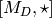 distribution is defined such that its columns are distributed like diagonals of the standard matrix distribution, [M_C,M_R]. Thus, d can be formed locally if the distribution can be aligned with that of the offset diagonal of 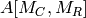.
- void GetDiagonal(DistMatrix<T, STAR, MD>& d, int offset=0 ) const¶
This is the same as above, but d is a row-vector instead of a column-vector.
- void SetDiagonal(const DistMatrix<T, MD, STAR>& d, int offset=0 )¶
Same as GetDiagonal, but in reverse.
- void SetDiagonal(const DistMatrix<T, STAR, MD>& d, int offset=0 )¶
Same as GetDiagonal, but in reverse.
Note
Many of the following routines are only valid for complex datatypes and are analogous to their general counterparts from above in the obvious manner.
- void GetRealPartOfDiagonal(DistMatrix<typename Base<T>::type, MD, STAR>& d, int offset=0 ) const¶
- void GetImagPartOfDiagonal(DistMatrix<typename Base<T>::type, MD, STAR>& d, int offset=0 ) const¶
- void GetRealPartOfDiagonal(DistMatrix<typename Base<T>::type, STAR, MD>& d, int offset=0 ) const¶
- void GetImagPartOfDiagonal(DistMatrix<typename Base<T>::type, STAR, MD>& d, int offset=0 ) const¶
- void SetRealPartOfDiagonal(const DistMatrix<typename Base<T>::type, MD, STAR>& d, int offset=0 )¶
- void SetImagPartOfDiagonal(const DistMatrix<typename Base<T>::type, MD, STAR>& d, int offset=0 )¶
- void SetRealPartOfDiagonal(const DistMatrix<typename Base<T>::type, STAR, MD>& d, int offset=0 )¶
- void SetImagPartOfDiagonal(const DistMatrix<typename Base<T>::type, STAR, MD>& d, int offset=0 )¶
Alignment
All of the following clear the distributed matrix’s contents and then reconfigure the alignments as described.
- void Align(int colAlignment, int rowAlignment)¶
Specify the process row, colAlignment, and process column, rowAlignment, which own the top-left entry.
- void AlignCols(int colAlignment)¶
Specify the process row which owns the top-left entry.
- void AlignRows(int rowAlignment)¶
Specify the process column which owns the top-left entry.
- void AlignWith(const DistMatrix<S, MC, MR>& A)¶
Force the alignments to match those of A.
- void AlignWith(const DistMatrix<S, MC, STAR>& A)¶
Force the column alignment to match that of A.
- void AlignWith(const DistMatrix<S, STAR, MR>& A)¶
Force the row alignment to match that of A.
- void AlignWith(const DistMatrix<S, MR, MC>& A)¶
Force the column alignment to match the row alignment of A (and vice-versa).
- void AlignWith(const DistMatrix<S, MR, STAR>& A)¶
Force the row alignment to match the column alignment of A.
- void AlignWith(const DistMatrix<S, STAR, MC>& A)¶
Force the column alignment to match the row alignment of A.
- void AlignWith(const DistMatrix<S, VC, STAR>& A)¶
Force the column alignment to be equal to that of A (modulo the number of process rows).
- void AlignWith(const DistMatrix<S, STAR, VC>& A)¶
Force the column alignment to equal the row alignment of A (modulo the number of process rows).
- void AlignWith(const DistMatrix<S, VR, STAR>& A)¶
Force the row alignment to equal the column alignment of A (modulo the number of process columns).
- void AlignWith(const DistMatrix<S, STAR, VR>& A)¶
Force the row alignment to equal the row alignment of A (modulo the number of process columns).
- void AlignColsWith(const DistMatrix<S, MC, MR>& A)¶
Force the column alignment to match that of A.
- void AlignColsWith(const DistMatrix<S, MC, STAR>& A)¶
Force the column alignment to match that of A.
- void AlignColsWith(const DistMatrix<S, MR, MC>& A)¶
Force the column alignment to match the row alignment of A.
- void AlignColsWith(const DistMatrix<S, STAR, MC>& A)¶
Force the column alignment to match the row alignment of A.
- void AlignColsWith(const DistMatrix<S, VC, STAR>& A)¶
Force the column alignment to match the column alignment of A (modulo the number of process rows).
- void AlignColsWith(const DistMatrix<S, STAR, VC>& A)¶
Force the column alignment to match the row alignment of A (modulo the number of process rows).
- void AlignRowsWith(const DistMatrix<S, MC, MR>& A)¶
Force the row alignment to match that of A.
- void AlignRowsWith(const DistMatrix<S, STAR, MR>& A)¶
Force the row alignment to match that of A.
- void AlignRowsWith(const DistMatrix<S, MR, MC>& A)¶
Force the row alignment to match the column alignment of A.
- void AlignRowsWith(const DistMatrix<S, MR, STAR>& A)¶
Force the row alignment to match the column alignment of A.
- void AlignRowsWith(const DistMatrix<S, VR, STAR>& A)¶
Force the row alignment to match the column alignment of A (modulo the number of process columns).
- void AlignRowsWith(const DistMatrix<S, STAR, VR>& A)¶
Force the row alignment to match the row alignment of A (modulo the number of process columns).
Views
- void View(DistMatrix<T, MC, MR>& A)¶
Reconfigure this matrix such that it is essentially a copy of the distributed matrix A, but the local data buffer simply points to the one from A.
- void LockedView(const DistMatrix<T, MC, MR>& A)¶
Same as above, but this matrix is “locked”, meaning that it cannot change the data from A that it points to.
- void View(DistMatrix<T, MC, MR>& A, int i, int j, int height, int width)¶
View a subset of A rather than the entire matrix. In particular, reconfigure this matrix to behave like the submatrix defined from the [i,i+height) rows and [j,j+width) columns of A.
- void LockedView(const DistMatrix<T, MC, MR>& A, int i, int j, int height, int width)¶
Same as above, but this matrix is “locked”, meaning that it cannot change the data from A that it points to.
- void View(int height, int width, int colAlignment, int rowAlignment, T* buffer, int ldim, const elem::Grid& grid)¶
Reconfigure this distributed matrix around an implicit [M_C,M_R] distributed matrix of the specified dimensions, alignments, local buffer, local leading dimension, and process grid.
- void LockedView(int height, int width, int colAlignment, int rowAlignment, const T* buffer, int ldim, const elem::Grid& grid)¶
Same as above, but the resulting matrix is “locked”, meaning that it cannot modify the underlying local data.
Note
The following functions have strict requirements on the input matrices and must be used with care in PureRelease and HybridRelease modes.
- void View1x2(DistMatrix<T, MC, MR>& AL, DistMatrix<T, MC, MR>& AR)¶
Recombine two adjacent submatrices to form
![[A_L A_R]](../_images/math/51ee936517ae9b8b7db5dd4fcc956f9cb52ff97c.png) .
.
- void LockedView1x2(const DistMatrix<T, MC, MR>& AL, const DistMatrix<T, MC, MR>& AR)¶
Same as above, but the result is “locked” (the data is not modifiable).
- void View2x1(DistMatrix<T, MC, MR>& AT, DistMatrix<T, MC, MR>& AB)¶
Recombine two adjacent submatrices to form
![[A_T; A_B]](../_images/math/4781672298c6230569613282614cbc05c894edf1.png) .
.
- void LockedView2x1(const DistMatrix<T, MC, MR>& AT, const DistMatrix<T, MC, MR>& AB)¶
Same as above, but the result is “locked” (the data is not modifiable).
- void View2x2(DistMatrix<T, MC, MR>& ATL, DistMatrix<T, MC, MR>& ATR, DistMatrix<T, MC, MR>& ABL, DistMatrix<T, MC, MR>& ABR)¶
Recombine four adjacent submatrices to form
![[A_{TL} A_{TR}; A_{BL} A_{BR}]](../_images/math/f48c43b5c776fad7576a03afd389a6be677f48be.png) .
.
- void LockedView2x2(const DistMatrix<T, MC, MR>& ATL, const DistMatrix<T, MC, MR>& ATR, const DistMatrix<T, MC, MR>& ABL, const DistMatrix<T, MC, MR>& ABR)¶
Same as above, but the result is “locked” (the data is not modifiable).
Custom communication routines
The following routines primarily exist as a means of avoiding the poor memory bandwidth which results from packing or unpacking large amounts of data without a unit stride. PLAPACK noticed this issue and avoided the problem by carefully (conjugate-)transposing matrices in strategic places, usually before a gather or after a scatter, and we follow suit.
- void SumScatterFrom(const DistMatrix<T, MC, STAR>& A)¶
Simultaneously sum 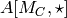 within each process row and scatter the entries in each row to form the result in an 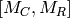 distribution.
- void SumScatterUpdate(T alpha, const DistMatrix<T, MC, STAR>& A)¶
Same as above, but add
times the result onto the parent
distributed matrix rather than simply assigning the result to it.
- void SumScatterFrom(const DistMatrix<T, STAR, MR>& A)¶
Simultaenously sum 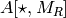 within each process column and scatter the entries in each column to form the result in an distribution.
- void SumScatterUpdate(T alpha, const DistMatrix<T, STAR, MR>& A)¶
Same as above, but add
times the result onto the parent
distributed matrix rather than simply assigning the result to it.
- void SumScatterFrom(const DistMatrix<T, STAR, STAR>& A)¶
Simultaneously sum 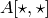 over the entire process grid and scatter the entries in each row and column to form the result in an distribution.
- void SumScatterUpdate(T alpha, const DistMatrix<T, STAR, STAR>& A)¶
Same as above, but add
times the result onto the parent
distributed matrix rather than simply assigning the result to it.
- void AdjointFrom(const DistMatrix<T, STAR, MC>& A)¶
Set the parent matrix equal to the redistributed adjoint of 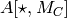; in particular, 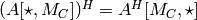, so perform an 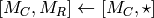 redistribution on the adjoint of A, which typically just consists of locally copying (and conjugating) subsets of the data from .
- void AdjointFrom(const DistMatrix<T, MR, STAR>& A)¶
This routine is the dual of the above routine, and performs an 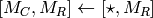 redistribution on the adjoint of A.
- void TransposeFrom(const DistMatrix<T, STAR, MC>& A)¶
Same as the corresponding AdjointFrom, but with no conjugation.
- void TransposeFrom(const DistMatrix<T, MR, STAR>& A)¶
Same as the corresponding AdjointFrom, but with no conjugation.
[MC,* ]¶
This distribution is often used as part of matrix-matrix multiplication. For a matrix distributed over a process grid, individual entries would be owned by the following processes (assuming the column alignment is 0):
![\[
\left(\begin{array}{ccccccc}
\{0,2,4\} & \{0,2,4\} & \{0,2,4\} & \{0,2,4\} & \{0,2,4\} &
\{0,2,4\} & \{0,2,4\} \\
\{1,3,5\} & \{1,3,5\} & \{1,3,5\} & \{1,3,5\} & \{1,3,5\} &
\{1,3,5\} & \{1,3,5\} \\
\{0,2,4\} & \{0,2,4\} & \{0,2,4\} & \{0,2,4\} & \{0,2,4\} &
\{0,2,4\} & \{0,2,4\} \\
\{1,3,5\} & \{1,3,5\} & \{1,3,5\} & \{1,3,5\} & \{1,3,5\} &
\{1,3,5\} & \{1,3,5\} \\
\{0,2,4\} & \{0,2,4\} & \{0,2,4\} & \{0,2,4\} & \{0,2,4\} &
\{0,2,4\} & \{0,2,4\} \\
\{1,3,5\} & \{1,3,5\} & \{1,3,5\} & \{1,3,5\} & \{1,3,5\} &
\{1,3,5\} & \{1,3,5\} \\
\{0,2,4\} & \{0,2,4\} & \{0,2,4\} & \{0,2,4\} & \{0,2,4\} &
\{0,2,4\} & \{0,2,4\}
\end{array}\right)
\]](../_images/math/02cf247374ef78d54f2e5092dc2e243b1ae69bad.png)
TODO: Add the member functions.
[* ,MR]¶
This distribution is also frequently used for matrix-matrix multiplication. For a matrix distributed over a process grid, individual entries would be owned by the following processes (assuming the row alignment is 0):
![\[
\left(\begin{array}{ccccccc}
\{0,1\} & \{2,3\} & \{4,5\} & \{0,1\} & \{2,3\} & \{4,5\} & \{0,1\} \\
\{0,1\} & \{2,3\} & \{4,5\} & \{0,1\} & \{2,3\} & \{4,5\} & \{0,1\} \\
\{0,1\} & \{2,3\} & \{4,5\} & \{0,1\} & \{2,3\} & \{4,5\} & \{0,1\} \\
\{0,1\} & \{2,3\} & \{4,5\} & \{0,1\} & \{2,3\} & \{4,5\} & \{0,1\} \\
\{0,1\} & \{2,3\} & \{4,5\} & \{0,1\} & \{2,3\} & \{4,5\} & \{0,1\} \\
\{0,1\} & \{2,3\} & \{4,5\} & \{0,1\} & \{2,3\} & \{4,5\} & \{0,1\} \\
\{0,1\} & \{2,3\} & \{4,5\} & \{0,1\} & \{2,3\} & \{4,5\} & \{0,1\}
\end{array}\right)
\]](../_images/math/b5bc391609f23fa3977c1975e564b0de9827fcb1.png)
TODO: Add the member functions.
[MR,MC]¶
This is essentially the transpose of the standard matrix distribution, [MC,MR]. For a matrix distributed over a process grid, individual entries would be owned by the following processes (assuming the column and row alignments are both 0):
![\[
\left(\begin{array}{ccccccc}
0 & 1 & 0 & 1 & 0 & 1 & 0 \\
2 & 3 & 2 & 3 & 2 & 3 & 2 \\
4 & 5 & 4 & 5 & 4 & 5 & 4 \\
0 & 1 & 0 & 1 & 0 & 1 & 0 \\
2 & 3 & 2 & 3 & 2 & 3 & 2 \\
4 & 5 & 4 & 5 & 4 & 5 & 4 \\
0 & 1 & 0 & 1 & 0 & 1 & 0
\end{array}\right)
\]](../_images/math/9c499b004ddc090959ad7aab623b21b7f2dabf26.png)
[MR,* ]¶
This is the transpose of the [* ,MR] distribution and is, like many of the previous distributions, useful for matrix-matrix multiplication. For a matrix distributed over a process grid, individual entries would be owned by the following processes (assuming the column alignment is 0):
![\[
\left(\begin{array}{ccccccc}
\{0,1\} & \{0,1\} & \{0,1\} & \{0,1\} & \{0,1\} & \{0,1\} & \{0,1\} \\
\{2,3\} & \{2,3\} & \{2,3\} & \{2,3\} & \{2,3\} & \{2,3\} & \{2,3\} \\
\{4,5\} & \{4,5\} & \{4,5\} & \{4,5\} & \{4,5\} & \{4,5\} & \{4,5\} \\
\{0,1\} & \{0,1\} & \{0,1\} & \{0,1\} & \{0,1\} & \{0,1\} & \{0,1\} \\
\{2,3\} & \{2,3\} & \{2,3\} & \{2,3\} & \{2,3\} & \{2,3\} & \{2,3\} \\
\{4,5\} & \{4,5\} & \{4,5\} & \{4,5\} & \{4,5\} & \{4,5\} & \{4,5\} \\
\{0,1\} & \{0,1\} & \{0,1\} & \{0,1\} & \{0,1\} & \{0,1\} & \{0,1\}
\end{array}\right)
\]](../_images/math/d32c18eadc0075869bc5a7809fc081ab97985e7a.png)
[* ,MC]¶
This is the transpose of the [MC,*] distribution and is, like many of the previous distributions, useful for matrix-matrix multiplication. For a matrix distributed over a process grid, individual entries would be owned by the following processes (assuming the column alignment is 0):
![\[
\left(\begin{array}{ccccccc}
\{0,2,4\} & \{1,3,5\} & \{0,2,4\} & \{1,3,5\} & \{0,2,4\} & \{1,3,5\} &
\{0,2,4\} \\
\{0,2,4\} & \{1,3,5\} & \{0,2,4\} & \{1,3,5\} & \{0,2,4\} & \{1,3,5\} &
\{0,2,4\} \\
\{0,2,4\} & \{1,3,5\} & \{0,2,4\} & \{1,3,5\} & \{0,2,4\} & \{1,3,5\} &
\{0,2,4\} \\
\{0,2,4\} & \{1,3,5\} & \{0,2,4\} & \{1,3,5\} & \{0,2,4\} & \{1,3,5\} &
\{0,2,4\} \\
\{0,2,4\} & \{1,3,5\} & \{0,2,4\} & \{1,3,5\} & \{0,2,4\} & \{1,3,5\} &
\{0,2,4\} \\
\{0,2,4\} & \{1,3,5\} & \{0,2,4\} & \{1,3,5\} & \{0,2,4\} & \{1,3,5\} &
\{0,2,4\} \\
\{0,2,4\} & \{1,3,5\} & \{0,2,4\} & \{1,3,5\} & \{0,2,4\} & \{1,3,5\} &
\{0,2,4\}
\end{array}\right)
\]](../_images/math/5a70063eb971a2902f405162ef5ec7bdf972210c.png)
[MD,* ]¶
TODO, but not as high of a priority since the distribution is not as crucial for end users as many other details that have not yet been documented.
[* ,MD]¶
TODO, but not as high of a priority since the 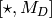 distribution is not as crucial for end users as many other details that have not yet been documented.
[VC,* ]¶
This distribution makes use of a 1d distribution which uses a column-major ordering of the entire process grid. Since 1d distributions are useful for distributing vectors, and a column-major ordering is used, the distribution symbol is VC. Again using the simple process grid, with a zero column alignment, each entry of a matrix would be owned by the following sets of processes:
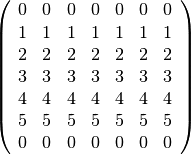
TODO: describe the member functions.
[* ,VC]¶
This is the transpose of the above [VC,* ] distribution. On the standard process grid with a row alignment of zero, a matrix would be distributed as:
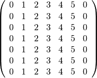
TODO: describe the member functions.
[VR,* ]¶
This distribution makes use of a 1d distribution which uses a row-major ordering of the entire process grid. Since 1d distributions are useful for distributing vectors, and a row-major ordering is used, the distribution symbol is VR. Again using the simple process grid, with a zero column alignment, each entry of a matrix would be owned by the following sets of processes:
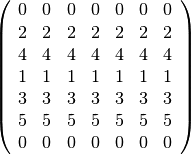
TODO: describe the member functions.
[* ,VR]¶
This is the transpose of the above [VR,* ] distribution. On the standard process grid with a row alignment of zero, a matrix would be distributed as:
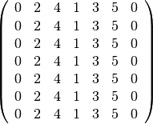
TODO: describe the member functions.
[* ,* ]¶
This “distribution” actually redundantly stores every entry of the associated matrix on every process. Again using a process grid, the entries of a matrix would be owned by the following sets of processes:
![\[
\left(\begin{array}{ccccccc}
\{0,1,...,5\} & \{0,1,...,5\} & \{0,1,...,5\} & \{0,1,...,5\} &
\{0,1,...,5\} & \{0,1,...,5\} & \{0,1,...,5\} \\
\{0,1,...,5\} & \{0,1,...,5\} & \{0,1,...,5\} & \{0,1,...,5\} &
\{0,1,...,5\} & \{0,1,...,5\} & \{0,1,...,5\} \\
\{0,1,...,5\} & \{0,1,...,5\} & \{0,1,...,5\} & \{0,1,...,5\} &
\{0,1,...,5\} & \{0,1,...,5\} & \{0,1,...,5\} \\
\{0,1,...,5\} & \{0,1,...,5\} & \{0,1,...,5\} & \{0,1,...,5\} &
\{0,1,...,5\} & \{0,1,...,5\} & \{0,1,...,5\} \\
\{0,1,...,5\} & \{0,1,...,5\} & \{0,1,...,5\} & \{0,1,...,5\} &
\{0,1,...,5\} & \{0,1,...,5\} & \{0,1,...,5\} \\
\{0,1,...,5\} & \{0,1,...,5\} & \{0,1,...,5\} & \{0,1,...,5\} &
\{0,1,...,5\} & \{0,1,...,5\} & \{0,1,...,5\} \\
\{0,1,...,5\} & \{0,1,...,5\} & \{0,1,...,5\} & \{0,1,...,5\} &
\{0,1,...,5\} & \{0,1,...,5\} & \{0,1,...,5\}
\end{array}\right)
\]](../_images/math/ddd8f4765c7af18e7b5a83315357babee8691127.png)
TODO: describe the member functions.